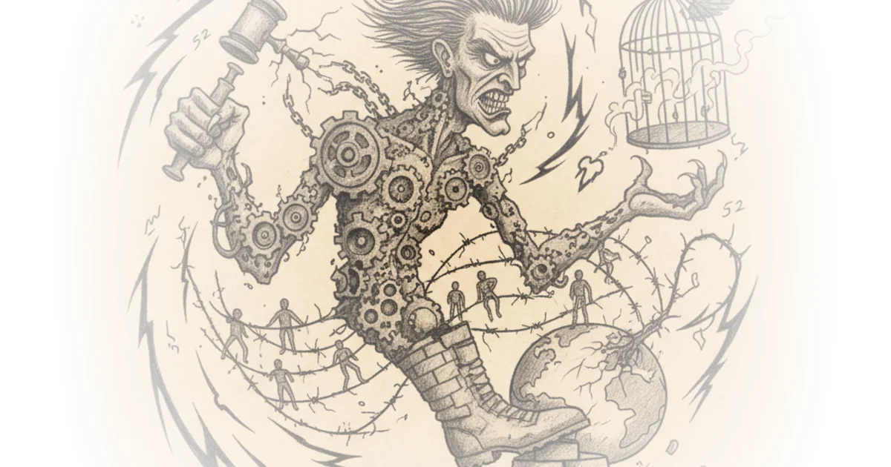

In a year defined by chaos, Team Zeteo has done something unprecedented: they turned a relentless catalog of democratic erosion into a historical record that refuses to let the present moment normalize itself. This isn't just a weekly recap; it is a forensic accounting of 3,740 specific incidents where the executive branch tested the limits of the Constitution, from the detention of journalists to the weaponization of the military against civilians.
The Architecture of Authoritarianism
Team Zeteo frames this past year not as a series of political disagreements, but as a systematic dismantling of the rule of law. They write, "52 weeks of attacking Americans, immigrants, and people worldwide. 52 weeks of assailing free speech, due process, and a free press." The sheer volume of data they compiled—over 168,000 words documenting a single year—serves as the article's most powerful evidence. By quantifying the assault, they strip away the administration's ability to claim these are isolated incidents or standard political maneuvering.

The coverage highlights how the administration has moved beyond rhetoric into active obstruction of the legislative branch. When Homeland Security Secretary Kristi Noem signed a memo restricting congressional oversight of ICE detention facilities, blocking Rep. Ilhan Omar from visiting, the administration was effectively testing the boundaries of the separation of powers. As Team Zeteo notes, Rep. Omar called this a "blatant attempt to obstruct members of Congress from doing their oversight duties." This mirrors the historical tensions seen in the Alien and Sedition Acts of 1798, where the federal government similarly attempted to silence dissent and bypass judicial review, though the modern context involves direct physical barriers to oversight rather than just criminalizing speech.
"Our goal: To ensure there would be a historical record of this dark time; to not normalize Trump and his administration's extreme rhetoric and actions."
The article's most disturbing revelations concern the administration's willingness to deploy federal force against its own citizens. The deployment of thousands of agents to Minneapolis following the shooting of Renee Good, coupled with the refusal to investigate the shooter, paints a picture of a government prioritizing the protection of law enforcement over the rights of the accused or the grieving. Team Zeteo points out that six leaders of the Justice Department's Civil Rights Division resigned in protest, a rare internal revolt that signals deep institutional rot. Critics might argue that the administration is simply enforcing the law with vigor, but the resignation of career prosecutors suggests the actions taken were not just aggressive, but legally and ethically untenable.
The Weaponization of Institutions
The piece meticulously details how independent institutions are being co-opted to serve political ends. The Federal Reserve, traditionally a bastion of non-partisan economic policy, found itself under criminal investigation simply for setting interest rates based on economic data rather than presidential preference. Team Zeteo quotes Federal Reserve Chair Jerome Powell, who stated that the threat of criminal charges "is a consequence of the Federal Reserve setting interest rates based on our best assessment of what will serve the public, rather than following the preferences of the president." This is a stark departure from the norm, turning economic policy into a loyalty test.
Similarly, the Department of Justice's actions regarding the investigation of Renee Good's widow, rather than the officer who killed her, reveal a disturbing inversion of justice. The article notes that federal investigators are now looking into the widow's connections to racial-justice groups, a tactic that feels less like law enforcement and more like political retribution. This aligns with the administration's broader strategy of framing civil rights activists as enemies of the state, a narrative that has historically been used to justify the suppression of dissent.
The human cost of these policies is laid bare in the story of Randall Gamboa Esquivel, a man in a vegetative state who was deported by ICE and died shortly after arriving in Costa Rica. Team Zeteo writes, "ICE deported a man in a vegetative state after his health deteriorated rapidly while in custody." This incident is not an anomaly but a symptom of a system where due process has been discarded in favor of speed and volume. The administration's decision to pause visa processing for 75 countries, claiming immigrants "take welfare from the American people at unacceptable rates," further illustrates a shift toward a nativist, exclusionary foreign policy that ignores the complexities of global migration.
The Erosion of Truth and Safety
The article also exposes the administration's casual approach to truth and international stability. From the President's regret over not seizing voting machines in 2020 to his threats of annexing Greenland, the executive branch is operating on a logic of force rather than diplomacy. Team Zeteo highlights the Pentagon's use of a "secret aircraft designed to appear like a civilian plane" in a strike that killed 11 people, a move that could constitute a war crime known as "perfidy." This is not just a military operation; it is a violation of the laws of armed conflict that puts the United States at risk of international condemnation and retaliation.
The administration's rhetoric has also turned increasingly volatile. When the President gave the middle finger to an autoworker and threatened a "day of reckoning" against Minnesota, the line between political leadership and mob mentality blurred. Team Zeteo captures this shift by noting that the President "continued to threaten Cuba, saying 'THERE WILL BE NO MORE OIL OR MONEY GOING TO CUBA'" and escalating tensions with Iran with threats of tariffs and military action. These are not the actions of a leader seeking stability, but of one seeking to dominate through fear.
"What happened today is a blatant attempt to obstruct members of Congress from doing their oversight duties."
The article's conclusion is a call to action, urging readers to recognize that the "dark time" they are living through is not inevitable. By documenting every abuse, Team Zeteo provides a roadmap for accountability. They argue that the administration's attempt to "flood the zone" with distractions has failed because the evidence is too overwhelming to ignore. The shift to highlighting only the "single worst attack on democracy for each day" in the future is a strategic move to ensure that the most egregious violations are not lost in the noise.
Bottom Line
Team Zeteo's year-long documentation provides an irrefutable record of an executive branch operating outside the bounds of constitutional norms, prioritizing political loyalty over the rule of law. While the sheer volume of incidents can be overwhelming, the article's greatest strength is its refusal to let any single event stand alone, revealing a coherent strategy of authoritarian consolidation. The biggest vulnerability for the administration remains the very institutions it is trying to dismantle, as evidenced by the resignations of career prosecutors and the legal challenges mounting against its policies.